Avaliação em Massa de Imóveis
Universidade Federal de Santa Catarina
12 de maio de 2026
Transformações não-lineares de v.a.
Transformações não-lineares de v.a.
- Também podemos utilizar funções \(h(X)\) não-lineares para transformar variáveis aleatórias
- Por exemplo: \(Y = h(Z) = Z^2\)
- A variável \(Y\) obtida com a elevação ao quadrado de uma var. com dist. normal padrão tem distribuição dita \(\chi^2_{(1)}\)
- \[f_Y(t) = \begin{cases} \frac{1}{\sqrt{2\pi t}} e^{-\frac{t}{2}} & \text { se } t> 0 \\ 0 & \text{ se } t \leq 0 \end{cases}\]
- A variável \(Y\) obtida com a elevação ao quadrado de uma var. com dist. normal padrão tem distribuição dita \(\chi^2_{(1)}\)
- Por exemplo: \(Y = h(Z) = Z^2\)
- Uma medida da dispersão amostral, denominada variância é:
- \[\mathbb V(X) = \frac{1}{n}\sum_{i = 1}^{n} (X_i - \mu)^2 \tag{1}\]
- É fácil notar que \(Y = \mathbb V(X) \sim \chi^2_{(1)}\)
- \[\mathbb V(X) = \frac{1}{n}\sum_{i = 1}^{n} (X_i - \mu)^2 \tag{1}\]
Distribuição \(\chi^2_{(1)}\)
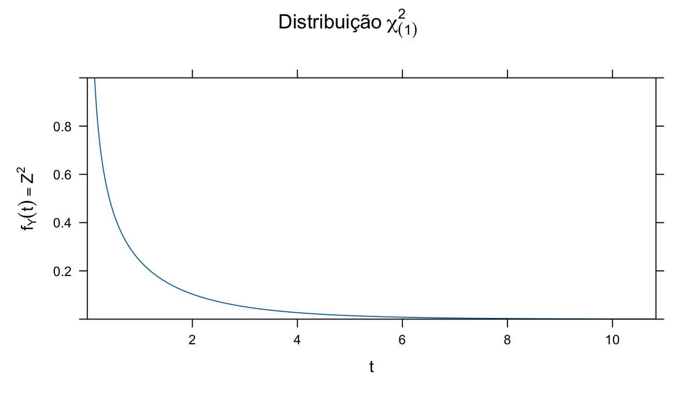
Figura 1: Distribuição \(\chi^2\) com 1 grau de liberdade.
- \(\mathbb E(Y) = 1\) (variância da distribuição normal padrão é igual a 1!)
Transformações não-lineares
- Seja \(Z\) uma variável com distribuição normal padrão
- Seja \(\mu\) e \(\sigma>0\) dois números reais
- Então \[X = e^{\mu + \sigma Z} \tag{2}\]
- tem distribuição dita lognormal!
- Então \[X = e^{\mu + \sigma Z} \tag{2}\]
- Seja \(\mu\) e \(\sigma>0\) dois números reais
- Inversamente, se \(X\) é uma variável com distribuição lognormal
- Então \(Y = \ln(X)\)
- É uma variável com distribuição normal!
- Então \(Y = \ln(X)\)
- A distribuição lognormal tem fdp:
- \[f_X(t) = \frac{1}{t\sigma\sqrt{2\pi}}\exp\left (-\frac{(\ln(t) - \mu)^2}{2\sigma^2} \right) \tag{3}\]
Distribuição Lognormal
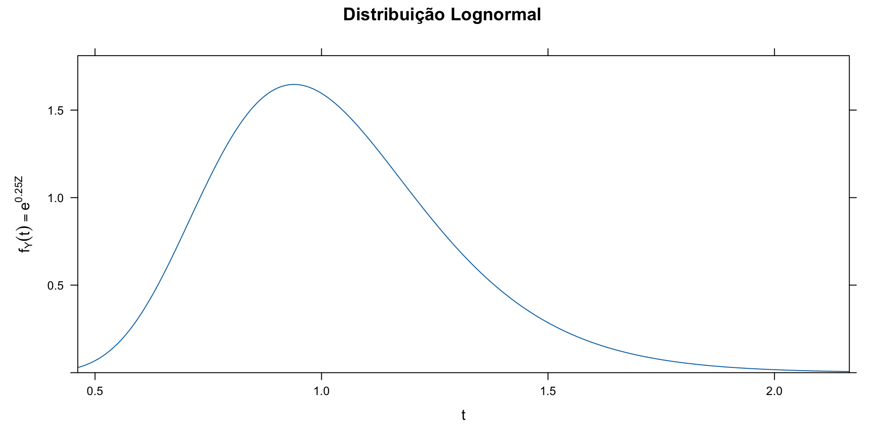
Figura 2: Distribuição Lognormal
Distribuição Lognormal
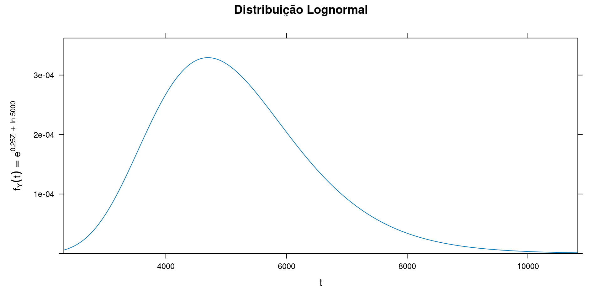
Figura 3: Distribuição Lognormal (\(\mu^* = 5000\))
Distribuição Lognormal
Estimação de parâmetros
- Os parãmetros da distribuição lognormal podem ser assim estimados:
- \[\hat \mu = \frac{1}{n} \sum_{i=1}^n \ln(X_i)\]
- \[\hat \sigma^2 = \frac{1}{n} \sum_{i=1}^n (\ln(X_i)-\hat\mu)^2\]
Aplicações
Casas nos EUA
year age agesq nbh cbd inst linst price rooms area land baths dist
1 1978 48 2304 4 3000 1000 6.9078 60000 7 1660 4578 1 10700
2 1978 83 6889 4 4000 1000 6.9078 40000 6 2612 8370 2 11000
3 1978 58 3364 4 4000 1000 6.9078 34000 6 1144 5000 1 11500
4 1978 11 121 4 4000 1000 6.9078 63900 5 1136 10000 1 11900
5 1978 48 2304 4 4000 2000 7.6009 44000 5 1868 10000 1 12100
6 1978 78 6084 4 3000 2000 7.6009 46000 6 1780 9500 3 10000
7 1978 22 484 4 4000 2000 7.6009 56000 6 1700 10878 2 11700
8 1978 78 6084 4 3000 2000 7.6009 38500 6 1556 3870 2 10200
9 1978 42 1764 4 3000 2000 7.6009 60500 8 1642 7000 2 10500
10 1978 41 1681 4 3000 2000 7.6009 55000 5 1443 7950 2 11000
ldist lprice y81 larea lland linstsq
1 9.277999 11.00210 0 7.414573 8.429017 47.71770
2 9.305651 10.59663 0 7.867871 9.032409 47.71770
3 9.350102 10.43412 0 7.042286 8.517193 47.71770
4 9.384294 11.06507 0 7.035269 9.210340 47.71770
5 9.400961 10.69195 0 7.532624 9.210340 57.77368
6 9.210340 10.73640 0 7.484369 9.159047 57.77368
7 9.367344 10.93311 0 7.438384 9.294497 57.77368
8 9.230143 10.55841 0 7.349874 8.261010 57.77368
9 9.259131 11.01040 0 7.403670 8.853665 57.77368
10 9.305651 10.91509 0 7.274479 8.980927 57.77368Análise Exploratória
Diagramas de Caixa
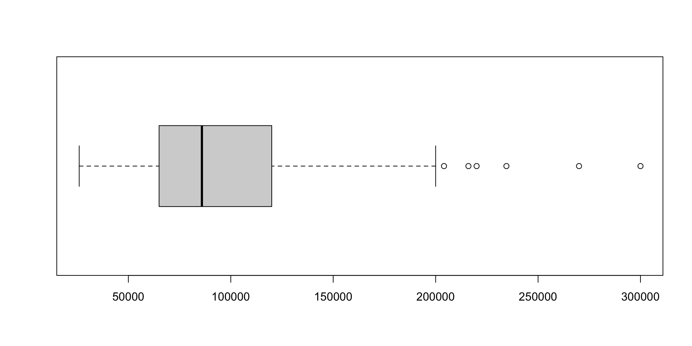
Análise Exploratória

Como é construído um Diagrama de Caixa
Os cinco números de Tukey
- O famoso estatístico John Tukey, em sua obra clássica, Exploratory Data Analysis, sugeriu os diagramas de caixa para ilustrar rapidamente os cinco números que considerava sugestivos da amostra:
- Valor Mínimo
- Primeiro Quartil
- Segundo Quartil ou Mediana
- Terceiro Quartil
- Valor Máximo
O que são Quartis?
- Para uma variável aleatória \(X = X_1, X_2, \ldots, X_n\), o k-ésimo quartil, \(Q_k\), é definido como o valor que separa a amostra em dois subconjuntos tal que (Moors 1988, 25):
- \[\mathbb P(X < Q_K) \leq k/4, \, \mathbb P(X > Q_K) \leq 1 - k/4, \, k = 1, 2, 3\]
- Também pode-se dizer, mas é menos comum, que \(Q_0 = \min(X)\) e \(Q_4 = \max(X)\)
O que são Percentis?
Analogamente aos quartis, os percentis são:
- \[\mathbb P(X < P_K) \leq k/100, \, \mathbb P(X > P_K) \leq 1 - k/100 \, k = 1, 2, \ldots, 99\]
Também pode-se dizer que \(P_0 = \min(X)\) e \(P_{100} = \max(X)\)
Também é possível definir Tercis, Quintis, e assim por diante!
- Tercis:
- \[\mathbb P(X < T_K) \leq k/3, \, \mathbb P(X > T_K) \leq 1 - k/3, \, k = 1, 2\]
- Tercis:
Histograma
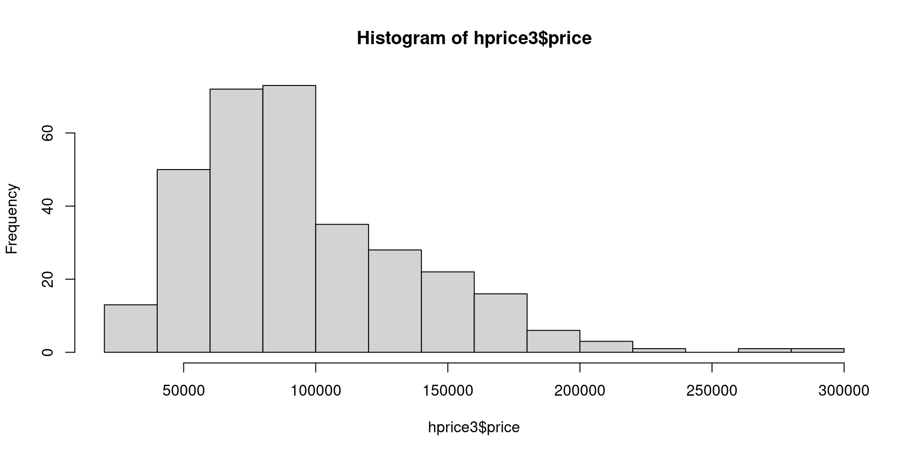
Histograma
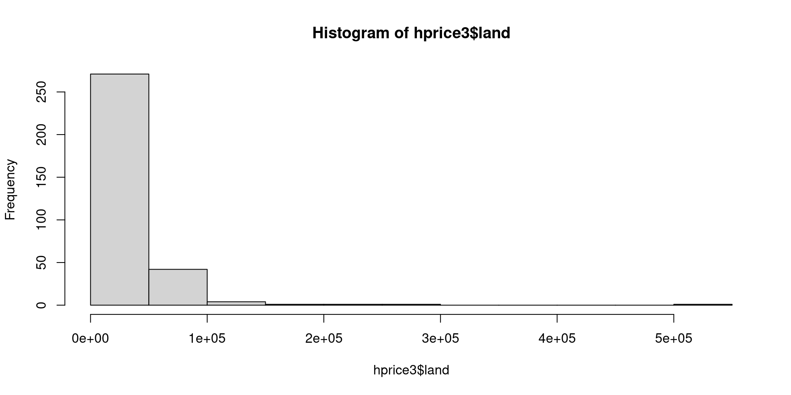
Histograma
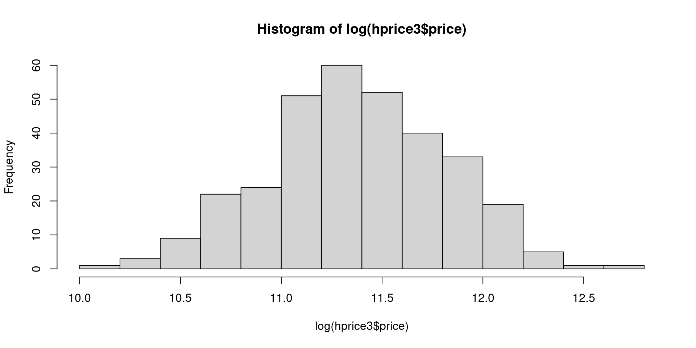
Histograma
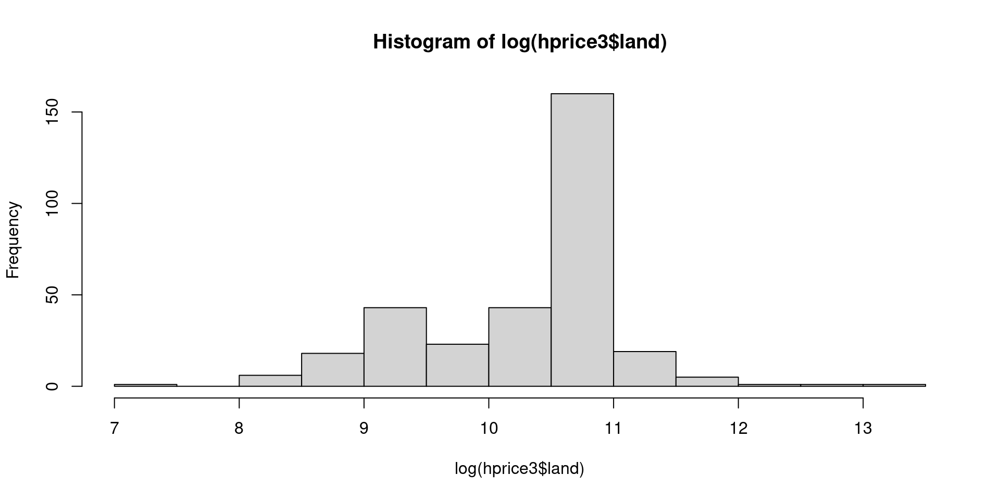
Análises de Regressão
Análise com preços totais

Análise com preços totais
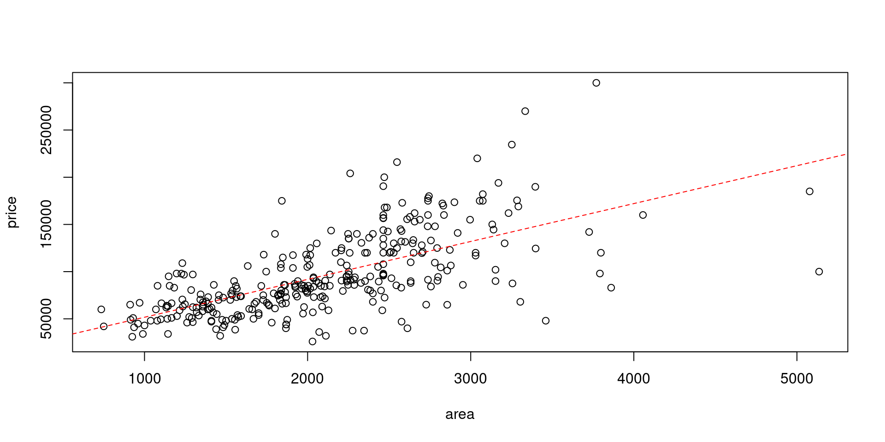
- \(R^2 = 0,41\)
Análise com preços unitários
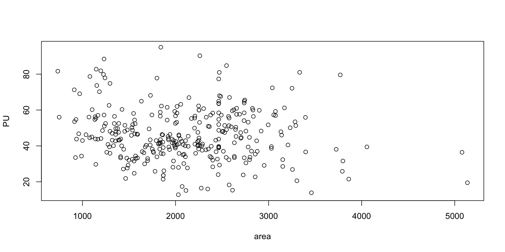
Análise com preços unitários
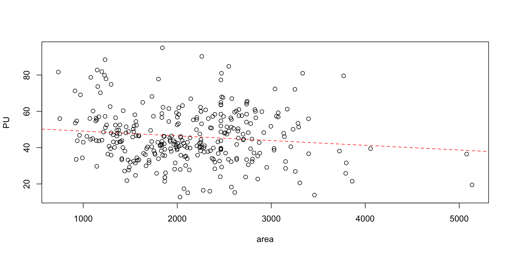
- \(R^2 = 0,015\)
Análise com preços unitários
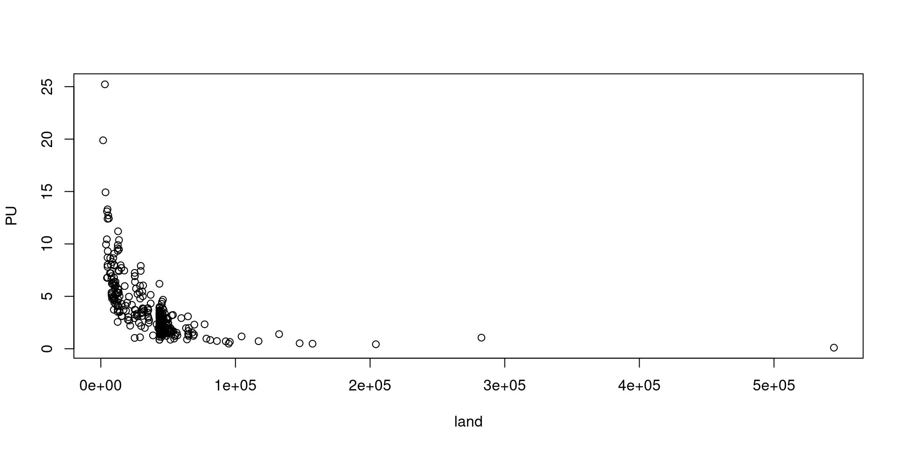
Análise com preços unitários

Estatísticas dos coeficientes
Call:
lm(formula = log(PU) ~ log(land), data = hprice3)
Residuals:
Min 1Q Median 3Q Max
-1.16788 -0.26037 -0.03899 0.28270 1.02910
Coefficients:
Estimate Std. Error t value Pr(>|t|)
(Intercept) 8.6955 0.2780 31.28 <2e-16 ***
log(land) -0.7396 0.0269 -27.49 <2e-16 ***
---
Signif. codes: 0 '***' 0.001 '**' 0.01 '*' 0.05 '.' 0.1 ' ' 1
Residual standard error: 0.3858 on 319 degrees of freedom
Multiple R-squared: 0.7032, Adjusted R-squared: 0.7023
F-statistic: 755.8 on 1 and 319 DF, p-value: < 2.2e-16- Com apenas uma variável, 70% de poder de explicação!
Soma de efeitos
Call:
lm(formula = log(PU) ~ log(land) + log(area), data = hprice3)
Residuals:
Min 1Q Median 3Q Max
-1.20114 -0.18050 -0.02436 0.23762 0.75368
Coefficients:
Estimate Std. Error t value Pr(>|t|)
(Intercept) 4.48864 0.40045 11.21 <2e-16 ***
log(land) -0.85706 0.02378 -36.03 <2e-16 ***
log(area) 0.71302 0.05597 12.74 <2e-16 ***
---
Signif. codes: 0 '***' 0.001 '**' 0.01 '*' 0.05 '.' 0.1 ' ' 1
Residual standard error: 0.3144 on 318 degrees of freedom
Multiple R-squared: 0.8035, Adjusted R-squared: 0.8023
F-statistic: 650.1 on 2 and 318 DF, p-value: < 2.2e-16- A segunda variável acrescenta 10 p.p. em poder de explicação!
Soma de efeitos (2)
Call:
lm(formula = log(PU) ~ log(land) + log(area) + age, data = hprice3)
Residuals:
Min 1Q Median 3Q Max
-1.27363 -0.18649 -0.01256 0.20098 0.78489
Coefficients:
Estimate Std. Error t value Pr(>|t|)
(Intercept) 5.0248911 0.3768540 13.334 < 2e-16 ***
log(land) -0.9112903 0.0231436 -39.375 < 2e-16 ***
log(area) 0.7252967 0.0517281 14.021 < 2e-16 ***
age -0.0039366 0.0005278 -7.458 8.46e-13 ***
---
Signif. codes: 0 '***' 0.001 '**' 0.01 '*' 0.05 '.' 0.1 ' ' 1
Residual standard error: 0.2905 on 317 degrees of freedom
Multiple R-squared: 0.8328, Adjusted R-squared: 0.8312
F-statistic: 526.4 on 3 and 317 DF, p-value: < 2.2e-16Soma de efeitos (3)
Call:
lm(formula = log(PU) ~ log(land) + log(area) + age + y81, data = hprice3)
Residuals:
Min 1Q Median 3Q Max
-1.0910 -0.1010 0.0081 0.1293 0.6898
Coefficients:
Estimate Std. Error t value Pr(>|t|)
(Intercept) 5.3019510 0.2979496 17.795 < 2e-16 ***
log(land) -0.8778141 0.0184149 -47.669 < 2e-16 ***
log(area) 0.6202023 0.0414998 14.945 < 2e-16 ***
age -0.0031569 0.0004201 -7.514 5.93e-13 ***
y81 0.3672458 0.0264070 13.907 < 2e-16 ***
---
Signif. codes: 0 '***' 0.001 '**' 0.01 '*' 0.05 '.' 0.1 ' ' 1
Residual standard error: 0.2291 on 316 degrees of freedom
Multiple R-squared: 0.8963, Adjusted R-squared: 0.895
F-statistic: 682.8 on 4 and 316 DF, p-value: < 2.2e-16Soma de efeitos (3)
Call:
lm(formula = log(PU) ~ log(land) + log(area) + age + y81 + nbh,
data = hprice3)
Residuals:
Min 1Q Median 3Q Max
-1.13566 -0.09991 0.00707 0.11831 0.65595
Coefficients:
Estimate Std. Error t value Pr(>|t|)
(Intercept) 5.3820316 0.2945496 18.272 < 2e-16 ***
log(land) -0.8789021 0.0181443 -48.440 < 2e-16 ***
log(area) 0.6169756 0.0408950 15.087 < 2e-16 ***
age -0.0030866 0.0004144 -7.448 9.18e-13 ***
y81 0.3596740 0.0261182 13.771 < 2e-16 ***
nbh -0.0191395 0.0058769 -3.257 0.00125 **
---
Signif. codes: 0 '***' 0.001 '**' 0.01 '*' 0.05 '.' 0.1 ' ' 1
Residual standard error: 0.2257 on 315 degrees of freedom
Multiple R-squared: 0.8997, Adjusted R-squared: 0.8981
F-statistic: 565 on 5 and 315 DF, p-value: < 2.2e-16Modelo Final
- Para definição do modelo final, precisamos definir as características do imóvel padrão
- área do terreno (moda): 43.560,00 sq. ft. (1 acre \(\approx\) 4.047 m2)
- área construída (moda): 2.464 sq. ft. (\(\approx\) 230 m2)
- idade (convenção): 0 (novo)
- year (convenção): 1978 (ano de venda)
- nbh (convenção): 0
Call: lm(formula = log(PU) ~ log(land/43560) + log(area/2464) + age + y81 +
nbh, data = hprice3)
Coefficients:
Estimate Std. Error t value Pr(>|t|)
(Intercept) 0.8119884 0.0247243 32.842 < 2e-16 ***
log(land/43560) -0.8789021 0.0181443 -48.440 < 2e-16 ***
log(area/2464) 0.6169756 0.0408950 15.087 < 2e-16 ***
age -0.0030866 0.0004144 -7.448 9.18e-13 ***
y81 0.3596740 0.0261182 13.771 < 2e-16 ***
nbh -0.0191395 0.0058769 -3.257 0.00125 **
---
Signif. codes: 0 '***' 0.001 '**' 0.01 '*' 0.05 '.' 0.1 ' ' 1
Residual standard deviation: 0.2257 on 315 degrees of freedom
Multiple R-squared: 0.8997
F-statistic: 565 on 5 and 315 DF, p-value: < 2.2e-16
AIC BIC
-36.63 -10.23 Verificação dos resíduos do modelo
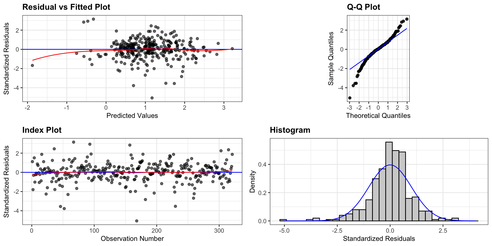
Saneamento do modelo
46 52 67 168 230
46 52 67 168 230 Modelo Final saneado
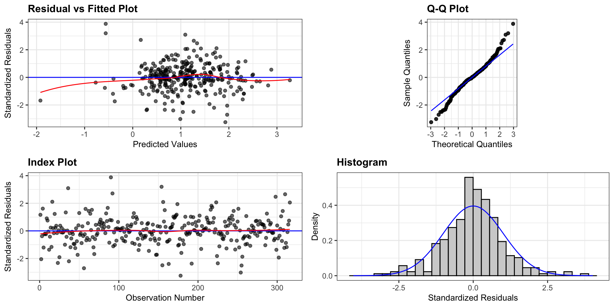
Modelo Final saneado
Call: lm(formula = log(PU) ~ log(land/43560) + log(area/2464) + age + y81 +
nbh, data = hprice3, subset = -c(46, 52, 67, 168, 230))
Coefficients:
Estimate Std. Error t value Pr(>|t|)
(Intercept) 0.8447054 0.0221096 38.205 < 2e-16 ***
log(land/43560) -0.8970179 0.0162112 -55.333 < 2e-16 ***
log(area/2464) 0.6369998 0.0366546 17.378 < 2e-16 ***
age -0.0036639 0.0003882 -9.438 < 2e-16 ***
y81 0.3446584 0.0231028 14.918 < 2e-16 ***
nbh -0.0232757 0.0052016 -4.475 1.08e-05 ***
---
Signif. codes: 0 '***' 0.001 '**' 0.01 '*' 0.05 '.' 0.1 ' ' 1
Residual standard deviation: 0.1983 on 310 degrees of freedom
Multiple R-squared: 0.9222
F-statistic: 734.7 on 5 and 310 DF, p-value: < 2.2e-16
AIC BIC
-117.76 -91.47 Equações de regressão e de estimação
- Equação de regressão:
- \[ \begin{align*} \ln (\text{PU}) &= 0,85 - 0,90\cdot \ln(\text{land}/43560) + \\ &0,64 \cdot \ln(\text{area}/2464) - 0,004\cdot \text{age} + \\ &0,35\cdot y81 - 0,023\cdot \text{nbh} + \varepsilon \end{align*} \tag{4}\]
- Equação de estimação:
- Para a equação de estimação, deve-se exponenciar a Equação 4:
- \[ \begin{align*} \text{PU} &= \exp(0,85 - 0,90\cdot \ln(\text{land}/43560) + \\ &0,64 \cdot \ln(\text{area}/2464) - 0,004\cdot \text{age} + \\ &0,35\cdot y81 - 0,023\cdot \text{nbh} + \varepsilon) \end{align*} \tag{5}\]
Homogeneneização
Homogeneização
- Após o ajuste do modelo de regressão, deve-se “homogeneizar” os dados.
- A homogeneização consiste na transformação dos dados da amostra em imóveis paradigma
- Ex.: um dado amostral com área de 500 \(m^2\) apresenta \(PU = 1.000,00\). Qual seria o preço unitário observado deste dado se ele tivesse a mesma área do imóvel paradigma, de 450 \(m^2\)?
- \[F_A = \left ( \frac{500}{450} \right )^{-0,25} \tag{6}\]
- \(F_A = 0,974\)
- \(PU_{\text{Hom}} = \frac{1.000}{0,974} = 1.026,70\)
- O fator da Equação 6 é conhecido como fator área de Abunahman
- De onde vem o fator área???
Derivação racional de fatores
- No final do processo de modelagem obtemos:
- \[\widehat{\ln(PU)} = \hat \beta_0 + \hat \beta_1 X_1 + \ldots + \hat \beta_k X_k\]
- Então:
- \[\widehat{PU} = \exp(\hat \beta_0 + \hat \beta_1 X_1 + \ldots + \hat \beta_k X_k)\]
- \[\widehat{PU} = \exp(\hat \beta_0) \cdot \exp(\hat \beta_1 X_1) \cdot \ldots \cdot \exp(\hat \beta_k X_k)\]
- Se o modelo estiver centralizado no lote paradigma:
- \(\widehat{PU_{\text{Hom}}} = \exp(\hat \beta_0)\)
- \(F_{X_1} = \exp(\hat \beta_1 X_1) = \exp(\hat \beta_1)^{X_1}\)
- \(\ldots\)
- \(F_{X_k} = \exp(\hat \beta_k X_k) = \exp(\hat \beta_k)^{X_k}\)
Derivação racional de fatores
- Obs.: se \(\hat \beta_k \ln(X_k)\) então:
- \(F_{X_k} = \exp[\hat \beta_k \ln(X_k)] = X_k^{\hat \beta_k}\)
Derivação racional de fatores
- Exemplo:
year y81 price age nbh cbd area land dist PU PUHom Fyear
1 1978 0 60000 48 4 3000 1660 4578 10700 13.106160 2.565806 1
2 1978 0 40000 83 4 4000 2612 8370 11000 4.778973 1.338243 1
3 1978 0 34000 58 4 4000 1144 5000 11500 6.800000 1.884636 1
4 1978 0 63900 11 4 4000 1136 10000 11900 6.390000 2.883111 1
5 1978 0 44000 48 4 4000 1868 10000 12100 4.400000 1.613544 1
6 1978 0 46000 78 4 3000 1780 9500 10000 4.842105 1.913430 1
Fage Fa Fl
1 0.8658877 0.7766389 7.595754
2 0.7795800 1.0380369 4.412921
3 0.8402969 0.6119876 7.016267
4 0.9675386 0.6092452 3.759924
5 0.8658877 0.8375894 3.759924
6 0.7913618 0.8121173 3.937566Derivação racional de fatores
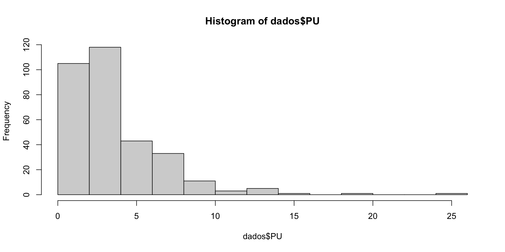
Derivação racional de fatores
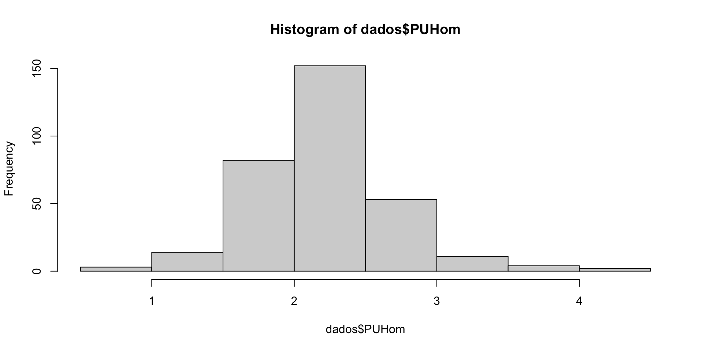
Geração de superfícies de valores
Geração de superfícies de valores
A partir de uma amostra homogeneizada, pode-se gerar superfície de valores unitários
Estas superfícies podem ser geradas através de diversos métodos, e.g:
- Krigagem
- IDW
Geração de superfícies de valores: IDW
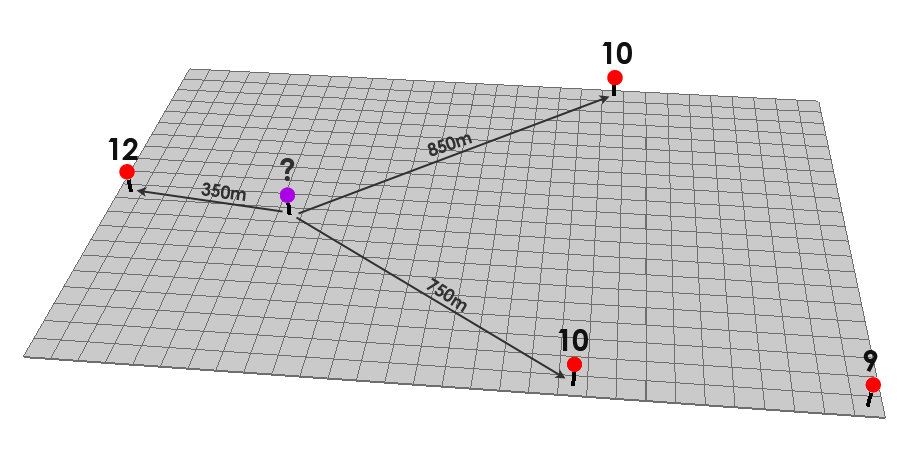
Inverse Distance Weighting
Geração de superfícies de valores: IDW
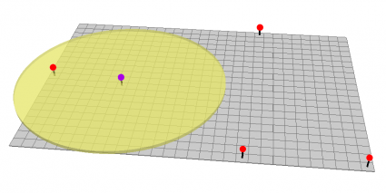
Buffer: somente pontos dentro do buffer serão utilizados na interpolação
Geração de superfícies de valores: IDW
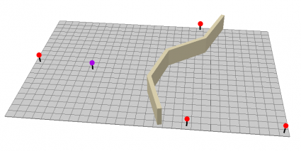
Barreiras físicas
Geração de superfícies de valores: IDW
Segundo Druck et al. (2004, 83), “uma alternativa simples para gerar uma superfície bidimensional” consiste em ajustar uma função bidimensional sobre as amostras, prevendo valores em uma grade (\(\hat{z}_i\)), com a seguinte formulação:
\[ \hat{z}_{i} = \frac{\sum_{j = 1}^n w_{ij}z_j}{\sum_{j=1}^n w_{ij}} \tag{7}\]
Em que os pesos são computados segundo o inverso de uma potência \(k\) das distâncias das amostras ao ponto de predição:
- \[ w_{ij} = \frac{1}{d_{ij}^k} \tag{8}\]
É um método extremamente simples e rápido para a obtenção de uma superfície de valores.
Geração de superfícies de valores: IDW
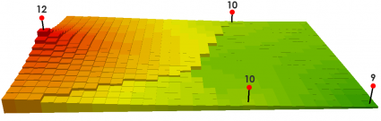
Efeito do fator de potência. k = 1
Geração de superfícies de valores: IDW
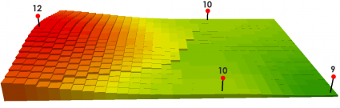
Efeito do fator de potência. k = 2
Geração de superfícies de valores: Krigagem
A Krigagem, por outro lado, é uma “técnica de estimação e predição de superfície baseada na modelagem da estrutura de correlação espacial” (Druck et al. 2004, 90).
“… a diferença entre a krigagem e outros métodos de interpolação é a maneira como os pesos são atribuídos às diferentes amostras. No caso de interpolação linear simples, por exemplo, os pesos são todos iguais a 1/N (N = número de amostras)”;
“na interpolação baseada no inverso do quadrado das distâncias, os pesos são definidos como o inverso do quadrado da distância que separa o valor interpolado dos valores observados.”
“Na Krigeagem, o procedimento é semelhante ao de interpolação por média móvel ponderada, exceto que aqui os pesos são determinados a partir de uma análise espacial, baseada no semivariograma experimental. Além disso, a krigagem fornece, em média, estimativas não tendenciosas e com variância mínima.”
Geração de superfícies de valores: Krigagem
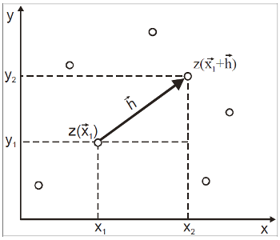
Krigagem
- Druck et al. (2004, 94):
- \[\gamma(h) = \frac{1}{2\mathcal N (\mathbf{h})} \sum_{i=1}^{\mathcal N(\mathbf{h})} [z(\mathbf{u_i}) - z(\mathbf{u_i} + \mathbf{h})]^2 \tag{9}\]
Geração de superfícies de valores: Krigagem
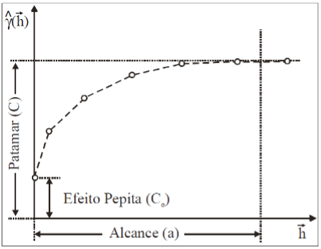
Krigagem: semivariograma experimental
Geração de superfícies de valores: Krigagem
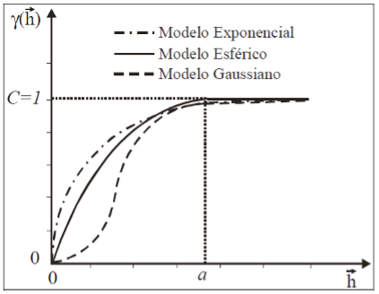
Krigagem: semivariograma teórico
Geração de superfícies de valores: Krigagem
- \[\hat Z_{\mathbf{u_0}} = \sum_{i=1}^n \lambda_i \cdot Z(\mathbf u_i)\]
- Com \(\lambda_i\) definidos através do sistema de krigagem ordinária (Druck et al. 2004, 104):
- \[ \left\{\begin{matrix} \sum_{j=1}^n \lambda_j C(\mathbf{u_i}, \mathbf{u_j}) - \alpha = C(\mathbf{u_i}, \mathbf{u_0}) & \text{para}\, i = 1, \ldots, n\\ \sum_{j=1}^n \lambda_j= 1& \\ \end{matrix}\right. \]
Geração de superfícies de valores: Krigagem
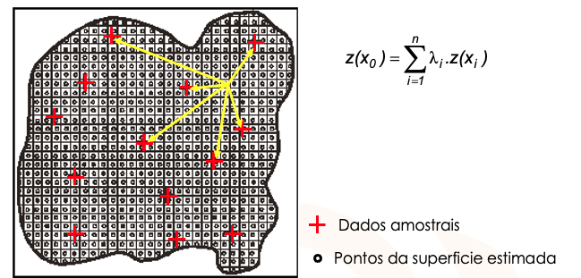
Krigagem em malha regular